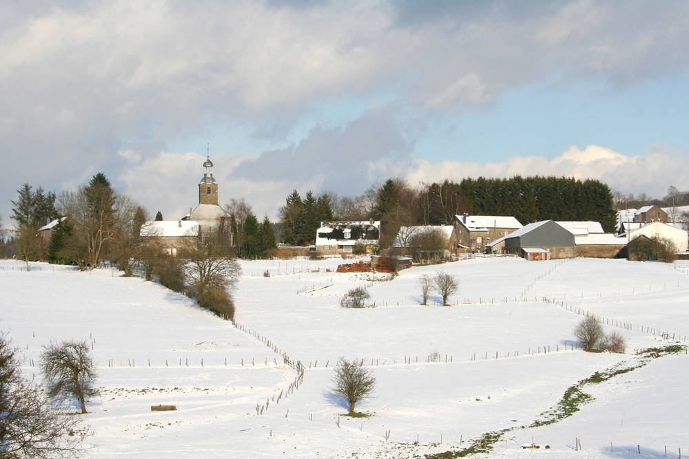

벨기에 아르덴 마을 말랑프레, 협동조합 열망으로 70가구 난방…낙농가가 꿈꾼 2033년 마을 에너지 자립에 다가서

2012년 협동조합, 2014년 마을 열망 완공…농업·산림 바이오매스로 내년 80가구까지 넓혀, 농장은 나무 가스화로 열·전기 만들고 남는 전기는 이웃 가정에 팔아
벨기에 남부 아르덴 지방 마네(Manhay)에 속한 말랑프레(Malempré) 마을이 협동조합이 운영하는 마을 열망으로 70가구를 난방하며, 2033년까지 마을의 에너지 자립을 이루겠다는 목표에 다가서고 있다. 이 목표를 내건 사람은 가족과 함께 생마르탱 농장(Ferme St Martin)에서 젖소를 키우는 낙농가 뱅상 세퓔트(Vincent Sépult)로, 그가 에너지 문제를 처음 고민한 것은 약 20년 전이다. 마을에는 2012년 협동조합이 생겼고 2014년 마을 열망이 완공됐으며, 농업과 숲에서 나온 바이오매스를 연료로 쓰는 이 열망은 내년 망을 넓히면 80가구를 데우게 된다. 세퓔트는 이와 별도로 자기 농장에 같은 나무를 쓰는 가스화 설비를 들여 열과 전기를 만들고 있는데, 열로는 건초 건조기를 돌리고 전기는 농장과 집, 민박에 쓴 뒤 남는 양을 전력 공유 플랫폼 볼트(Bolt)를 통해 가정 소비자에게 판다. 그는 같은 재생에너지로 돌리는 작은 데이터센터를 농장에 두는 것을 다음 목표로 삼고 있다.
시민에너지 관점
농민 한 사람의 고민이 협동조합으로, 다시 70가구를 데우는 마을 열망으로 이어졌다는 것은 에너지 전환이 마을 크기에서도 충분히 굴러간다는 것을 보여 준다. 나무를 때는 난방이 숲을 해치지 않느냐는 걱정이 있을 수 있지만, 이 마을은 농업과 숲에서 나오는 바이오매스를 쓰고 있고, 독일 니더작센주 윤데(Jühnde) 마을도 2000년대 중반 주민 협동조합으로 농업 바이오매스 열망을 꾸려 '바이오에너지 마을'의 본보기가 됐다. 연료도, 설비도, 이익도 마을 안에 머물기 때문에 난방비로 바깥에 나가던 돈이 이웃의 살림이 되고, 그래서 주민이 끝까지 함께 간다. 국내 농산촌도 햇빛 발전에 그치지 말고 마을 단위 열 공급까지 주민 협동조합이 맡을 수 있도록 제도와 초기 자금을 마련해야 한다.
출처: RTBF 2026-11-04 Philippe Herman 원문 보기
창간 전 시험 발행 기사입니다.
ベルギー・アルデンヌの村マランプレ、協同組合の熱供給網で70世帯を暖房…酪農家が描く2033年の村のエネルギー自立に近づく
2012年に協同組合、2014年に村の熱供給網が完成…農業・森林バイオマスで来年は80世帯に拡大、農場では木材ガス化で熱と電気をつくり余った電気を近隣家庭に販売
ベルギー南部アルデンヌ地方マネ（Manhay）に属するマランプレ（Malempré）村は、協同組合が運営する村の熱供給網で70世帯を暖房しており、2033年までに村のエネルギー自立を実現するという目標に近づいている。この目標を掲げたのは、家族とともにサン・マルタン農場（Ferme St Martin）で乳牛を育てる酪農家ヴァンサン・セピュルト（Vincent Sépult）さんで、彼が初めてエネルギーの問題を考え始めたのは約20年前だ。村では2012年に協同組合が生まれ、2014年に村の熱供給網が完成した。農業と森林から出るバイオマスを燃料とするこの熱供給網は、来年の網の拡張で80世帯を暖めることになる。セピュルトさんはこれとは別に、自身の農場に同じ木材を使うガス化設備を導入して熱と電気をつくっており、熱で干し草の乾燥機を動かし、電気は農場や自宅、民宿で使ったうえで、余った分を電力共有プラットフォーム「ボルト（Bolt）」を通じて家庭の消費者に売っている。彼は、同じ再生可能エネルギーで動く小さなデータセンターを農場に置くことを次の目標にしている。
市民エネルギーの視点
一人の農家の思いが協同組合へ、さらに70世帯を暖める村の熱供給網へとつながったことは、エネルギー転換が村の規模でも十分に回ることを示している。木を燃やす暖房は森を損なうのではという懸念もありうるが、この村は農業と森林から出るバイオマスを使っており、ドイツ・ニーダーザクセン州のユーンデ（Jühnde）村も2000年代半ばに住民協同組合で農業バイオマスの熱供給網をつくり、「バイオエネルギー村」の手本となった。燃料も設備も利益も村の中にとどまるため、暖房費として外に出ていたお金が隣人の暮らしになり、だからこそ住民が最後まで一緒に歩む。韓国の農山村も太陽光発電にとどまらず、村単位の熱供給まで住民協同組合が担えるよう、制度と初期資金を整えるべきだ。
出典: RTBF 2026-11-04 Philippe Herman 原文を読む
創刊前の試験発行記事です。
比利时阿登地区马朗普雷村以合作社供热网为70户供暖，正接近奶农设想的2033年全村能源自给
2012年成立合作社，2014年村级供热网建成；利用农业和林业生物质，明年扩至80户；农场用木材气化生产热和电，余电卖给附近家庭
隶属比利时南部阿登地区马奈（Manhay）的马朗普雷（Malempré）村，正通过合作社运营的村级供热网为70户人家供暖，离2033年前实现全村能源自给的目标越来越近。提出这一目标的是与家人一起在圣马丁农场（Ferme St Martin）饲养奶牛的奶农樊尚·塞皮尔特（Vincent Sépult），他最早开始思考能源问题是在大约20年前。村里在2012年成立了合作社，2014年村级供热网建成；这一以农业和森林生物质为燃料的供热网明年扩网后将为80户供暖。此外，塞皮尔特还在自家农场引入使用同样木材的气化设备生产热和电：热用于驱动干草烘干机，电供农场、住宅和民宿使用，剩余电力通过电力共享平台Bolt卖给家庭用户。他把在农场建一个用同样可再生能源运转的小型数据中心作为下一个目标。
市民能源视角
一位农民的思考发展成合作社，又发展成为70户供暖的村级供热网，说明能源转型在村庄这一规模上同样可以运转起来。有人可能担心烧木材供暖会破坏森林，但这个村使用的是来自农业和森林的生物质；德国下萨克森州的于恩德（Jühnde）村也在2000年代中期由居民合作社建起农业生物质供热网，成为"生物能源村"的样板。燃料、设备和收益都留在村里，过去作为取暖费流向外部的钱变成了邻里的生计，居民也因此愿意一路同行。韩国的农山村也不应止步于光伏发电，而应完善制度并准备启动资金，让居民合作社能够承担村级供热。
来源: RTBF 2026-11-04 Philippe Herman 查看原文
本文为创刊前试发行文章。
Belgian Ardennes village of Malempré heats 70 homes through a cooperative heat network, edging towards a dairy farmer's goal of village energy autonomy by 2033
A cooperative formed in 2012 and the village heat network was completed in 2014; running on farm and forest biomass, it will reach 80 homes next year, while the farm gasifies wood for heat and power and sells its surplus to local households
The village of Malempré, part of the municipality of Manhay in Belgium's southern Ardennes, now heats 70 households through a village heat network run by a cooperative and is getting closer to its goal of energy autonomy by 2033. The goal was set by Vincent Sépult, a dairy farmer who runs the Ferme St Martin with his family and who first began thinking about energy about 20 years ago. A cooperative was formed in the village in 2012 and the village heat network was completed in 2014; fuelled by agricultural and forest biomass, it will heat 80 households once the network is extended next year. Separately, Sépult has installed gasifiers on his own farm that use the same wood to produce heat and electricity, using the heat to run a hay dryer and the electricity for the farm, his home and his holiday cottages, with the surplus sold to household consumers through the power-sharing platform Bolt. His next aim is a small data centre on the farm running on the same renewable sources.
Citizen Energy View
That one farmer's thinking led to a cooperative and then to a village heat network warming 70 homes shows that the energy transition can work at the scale of a village. Some may worry that burning wood for heat harms forests, but this village uses biomass from farming and woodland, and the village of Jühnde in Lower Saxony, Germany, became a model "bioenergy village" in the mid-2000s after residents formed a cooperative to run a heat network on agricultural biomass. Because the fuel, the equipment and the returns all stay in the village, money that used to leave as heating bills becomes neighbours' income, which is why residents stay with it. Rural areas in Korea, too, should not stop at solar power but put in place the rules and start-up funding that let residents' cooperatives take on village heat supply.
Source: RTBF 2026-11-04 Philippe Herman Read the original
This article was published during the trial period before launch.